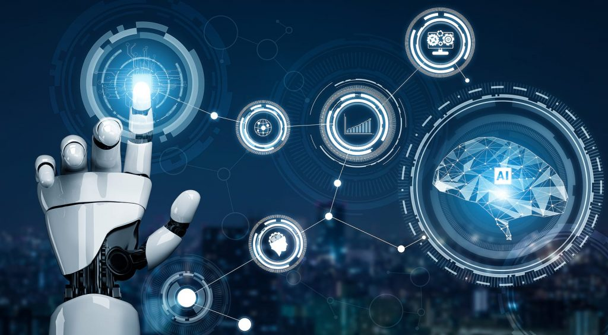

How COVID-19 has affected trade

The fact is COVID-19 is affecting international trade-Major drops in the importing and exporting of goods has left many countries economy(South Africa's included) in bad shape,Since the outbreak of the coronavirus disease of 2019. Millions of jobs have already been lost, millions of livelihoods are at risk, and an estimated additional 130 million people will be living in extreme poverty if the crisis persists.On 23 September 2020, the World Health Organization reported that more than 31 million people had been confirmed infected with COVID-19 . That same day, almost 963,000 deaths globally because of the virus,this cut the work force in many countries.Many companies had to close to practice social distancing to slow down the virus this meant that most primary,secondary and tertiary sectors were closed
Measure's taken to repair the economy and trading sector

South African has Reconstruction and Recovery Plan to deal would the rebuilding and repairing of the trading sector,some aspects of this plan include the following;
- Aggressive infrastructure investment
- Employment orientated strategic localization, reindustrialization and export promotion
- Mass public employment interventions
- Support for tourism recovery and growth
- Gender equality and economic inclusion of women and youth
- Strengthening food security
- Skills development
specific interventions in the trading sector which has emerged as an important area of growth
and employment will be made to strengthen the economic reconstruction and recovery.
Interventions will be equiped to protect vulnerable workers,
households and firms; build consumer, investor and public confidence; deepen industrialization
through localization; pursue environmental sustainability, deliver quick wins; and continue
providing relief to mitigate the impact of Covid-19. Ultimately, the end goal is to pursue stablity in the
infrastructure and start economic reconstruction and recovery with investment in infrastructure that
will stimulate the various sectors of the economy.
Working/shopping online

Today, many people prefer online shopping because of its many obvious benefits. Products are easier to find and you can easily and effortlessly order products without going to the store,and now during the pandemic online shopping has made things much safer and easier as there is little to no physical contact with other people,here are some other benfits:
- Discounts-Since most people are purchasing online for their household items, there’s a higher chance that companies will give online discounts to attract more customers
- Convenience-Shopping online promotes convenience. All you need is to find an e-commerce site that is well-reviewed, a stable internet connection and a mobile phone or computer.No physical money is need since you can pay conveniently online using credit cards,limits physical exposures.
- Wide Product Variety-wide selection of products from international and local companies
- More Informed Decision-making-online products are usually rated
South African has Reconstruction and Recovery Plan to deal would the rebuilding and repairing of the trading sector,some aspects of this plan include the following;
- Aggressive infrastructure investment
- Employment orientated strategic localization, reindustrialization and export promotion
- Mass public employment interventions
- Support for tourism recovery and growth
- Gender equality and economic inclusion of women and youth
- Strengthening food security
- Skills development
specific interventions in the trading sector which has emerged as an important area of growth and employment will be made to strengthen the economic reconstruction and recovery. Interventions will be equiped to protect vulnerable workers, households and firms; build consumer, investor and public confidence; deepen industrialization through localization; pursue environmental sustainability, deliver quick wins; and continue providing relief to mitigate the impact of Covid-19. Ultimately, the end goal is to pursue stablity in the infrastructure and start economic reconstruction and recovery with investment in infrastructure that will stimulate the various sectors of the economy.
Working/shopping online
Today, many people prefer online shopping because of its many obvious benefits. Products are easier to find and you can easily and effortlessly order products without going to the store,and now during the pandemic online shopping has made things much safer and easier as there is little to no physical contact with other people,here are some other benfits:
- Discounts-Since most people are purchasing online for their household items, there’s a higher chance that companies will give online discounts to attract more customers
- Convenience-Shopping online promotes convenience. All you need is to find an e-commerce site that is well-reviewed, a stable internet connection and a mobile phone or computer.No physical money is need since you can pay conveniently online using credit cards,limits physical exposures.
- Wide Product Variety-wide selection of products from international and local companies
- More Informed Decision-making-online products are usually rated